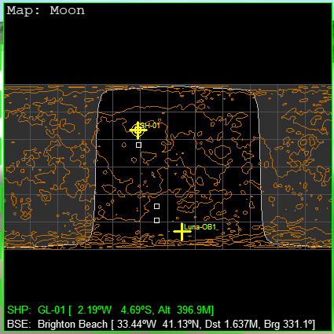
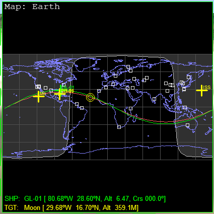

Part9 月への打ち上げ
タイミングを待って、パーキング軌道へと打ち上げます。
TransXの更新
今回の内容に進む前に、TransXを最新版に更新してください。
TransXの更新と設定
使用するシナリオ
ChecklistsフォルダのQuickstartを選択。

ダブルクリックでゲームを開始する。
Map MFD
月面基地が昼側に出てくるのを待つ。
Map MFDを使用する。
目的地を指定する
REFをクリック。
矢印キーで項目を移動する。
Earth→Moonを選択。
Enterを押して決定する。
TGTをクリック。
Space ports→Brighton Beachを選択。
目標地点に目印が表示される。
月面の昼と夜
目的地が夜側にあるか昼側にあるか確認する。
白っぽく表示されているのが昼側。

基地が昼側に出てくるまで時間経過させる。
タイムワープ最大（100000倍速）にする。
月の自転は遅いので、数日～数週間かかる。
Align Planes MFD
Align Planes MFDを開く。
TGTをクリック。
Celestial bodies→Moonを選択。
軌道面を近づける
タイムワープ1000倍で時間経過させる。
ひとりでにRIncが小さくなる。
RIncが下がらなくなるまで待つ。
このとき、Rateは0.000になる。
この解説は下記を参照すること。
パーキング軌道へ
月遷移軌道に乗るまでの待機軌道のことを、パーキング軌道と呼ぶ。
宇宙船を打ち上げて、パーキング軌道に投入する。
打ち上げ
エンジンに点火して離陸する。
方位090（真東）に向けて旋回する。
機首を上げて上昇する。
高度20kmで機首を下げる。
針路を修正する
加速しつつ、Align MFDを確認する。
左右に針路を変更する。
Rateを0.000かマイナスにする。
機体を左右に傾けるか、機首を左右に向ける。
Deleteを押し続ける。
エレベータートリムを最大まで上げる。
| Delete | UP | 機首を上げる |
| Insert | DN | 機首を下げる |

機首上げをトリムに任せておけば、針路修正に専念できる。
軌道投入
高度200kmの円軌道に投入する。
軌道面を一致させる
Align MFDを使って、RIncをゼロにする。
手順はPart2と同じ。
解説
地球は自転しているので、同じ方角に打ち上げたとしても、打ち上げ時刻によって軌道要素が変化する。
これを利用して、宇宙船の軌道面と月の公転軌道面のずれを小さくすることができる。
宇宙船が地上にいるとき、Map MFDには、真東に打ち上げたと仮定したときの軌道面が緑で表示される。
Moonをターゲットして時間経過させると、両者の軌道面が近づく様子を観測できる。

関連項目
軌道面を一致させない（Align MFDを使わない）方法について紹介しています。